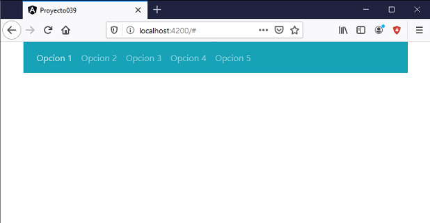

Como hemos tratado en todo el curso el corazón de Angular es dividir una aplicación en componentes y luego hacer que las mismas interactuen entre ellas, lograr crear componentes reutilizables y fáciles de mantener.
En este concepto y los próximos realizaremos una serie de componentes para practicar el desarrollo de componentes y utilizaremos en las mismas las herramientas que nos facilitan Bootstrap para las interfaces visuales.
Crear una componente llamada MenudebarraComponent y cuyo selector debe llamarse 'boot-menudebarra'.
Mediante 'property binding' se se debe poder comunicar un arreglo con las etiquetas que debe mostrar el menú, una segunda propiedad debe poder cargarse para indicar el color de fondo de la barra, los colores deben ser alguno de los valores clásicos propuestos por Bootstrap (bg-primary, bg-secondary, bg-success, bg-danger, bg-warning, bg-info, bg-light, bg-dark, bg-white)
Por otro lado desde la componente 'barrademenu' debe disparar un evento cuando el usuario selecciona una opción del menú.
Crearemos primero el proyecto
ng new proyecto039
Instalamos el Bootstrap original con alguna de las tres formas vistas en el concepto anterior, mediante CDN o localizandolo en la capeta 'assets' o mediante npm.
Crearemos la componente de barra de menú e indicamos como prefijo para la nueva etiqueta la cadena 'boot' (la idea es recordarnos que esta componente utiliza la librería de Bootstrap):
ng generate component barrademenu --prefix boot
Modificamos el archivo 'barrademenu.component.ts':
import { Component, OnInit, Input, Output, EventEmitter } from '@angular/core';
@Component({
selector: 'boot-barrademenu',
templateUrl: './barrademenu.component.html',
styleUrls: ['./barrademenu.component.css']
})
export class BarrademenuComponent implements OnInit {
@Input() opciones!: string[];
@Input() colorfondo!: string;
@Output() presionopcion = new EventEmitter();
constructor() { }
ngOnInit(): void {
}
presion(i: number): void {
this.presionopcion.emit(i);
}
}
Definimos las dos propiedades que llegan datos a las componentes mediante el decorador @Input:
@Input() opciones!: string[]; @Input() colorfondo!: string;
Para definir el evento que dispara la componente:
@Output() presionopcion = new EventEmitter();
El método 'presion' se ejecuta cuando alguna de las opciones del menú de barra es presionada (informa a la componente padre el número de opción presionada):
presion(i: number): void {
this.presionopcion.emit(i);
}
Modificamos el archivo 'barrademenu.component.html':
<nav class="navbar navbar-expand-sm navbar-dark {{colorfondo}}">
<ul class="navbar-nav">
<li class="nav-item" *ngFor="let opcion of opciones;let i=index">
<a class="nav-link" href="#" (click)="presion(i+1)">{{opcion}}</a>
</li>
</ul>
</nav>
Utilizamos clases propias de Bootstrap para definir el color de fondo que se remplaza mediante interpolación
<nav class="navbar navbar-expand-sm navbar-dark {{colorfondo}}">
Mediante la directiva *ngFor generamos todas las etiquetas 'li' con una etiqueta 'a' en su interior que muestra la opción y enlaza el evento 'click' pasando el número de opción seleccionada:
<li class="nav-item" *ngFor="let opcion of opciones;let i=index">
<a class="nav-link" href="#" (click)="presion(i+1)">{{opcion}}</a>
</li>
Ahora nos queda consumir la componente 'boot-barrademenu', esto lo haremos desde la componente principal de nuestra aplicación Angular.
Modificamos el archivo 'app.component.html':
<div class="container"> <boot-barrademenu [opciones]="opciones" colorfondo="bg-info" (presionopcion)="presion($event)"></boot-barrademenu> </div>
Mediante enlace de propiedades enlazamos el arreglo a pasar a la propiedad 'opciones' de la componente:
[opciones]="op"
Para la propiedad 'colorfondo' directamente pasamos el string del color que queremos que aparezca la barra de menú:
colorfondo="bg-info"
Finalmente enlazamos el evento que dispara la componente 'presionopcion':
(presionopcion)="presion($event)
Modificamos el archivo 'appcomponent.component.ts':
import { Component } from '@angular/core';
@Component({
selector: 'app-root',
templateUrl: './app.component.html',
styleUrls: ['./app.component.css']
})
export class AppComponent {
opciones = [
"Opcion 1", "Opcion 2", "Opcion 3", "Opcion 4", "Opcion 5"
];
presion(op: number) {
alert("Se informa que se presiono la opcion " + op);
}
}
Definimos el arreglo con las opciones que tendrá la barra de menú:
opciones = [
"Opcion 1", "Opcion 2", "Opcion 3", "Opcion 4", "Opcion 5"
];
Definimos el método que recibe el número de opción seleccionado de la barra de menú:
presion(op: number) {
alert("Se informa que se presiono la opcion " + op);
}
Ahora ejecutemos la aplicación:
ng serve -o
Tenemos como resultado:
Podemos probar esta aplicación en la web aquí.